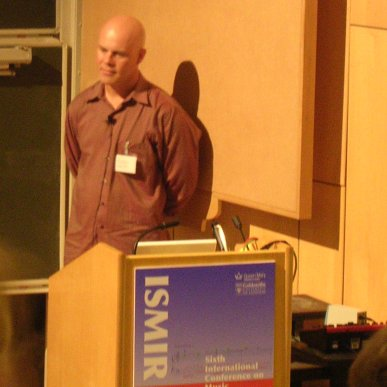

I'm blinded by science!
Stephen Robertson Microsoft researcher and Professor of information science at City University of London - gave an excellent keynote on the 'ascendency of words". One of my take-away was: "When looking for data, it is better to go for richness than to eliminate noise"
The Mirex Panel - a discussion of lessons learned from this years MIREX and some early plans for next years MIREX
Meinard Muller of uni-bonn.de gave one of the best talks of the week. He described a method for audio matching using chroma-based features. There's a paper describing some similar work here.
Thomas Dolby (yes, that Thomas Dolby) gave a talk about sonification, using sound to explore data, very interesting.

Sorry so short today, hopefully more later ...